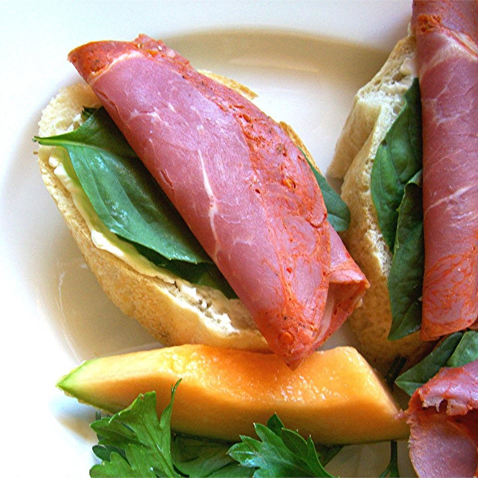

Capicola Canapes

Description
Easy, delicious appetizer using spicy, capicola ham. Make sure you use fresh basil, as the flavors will not be the same if you use dried. These can be made ahead of time and refrigerated, but be sure to bring them up to room temperature before serving to blend the flavors.
Ingredients
- 1 sourdough baguette
- 1 (8 ounce) package cream cheese, at room temperature
- 25 large fresh basil leaves, washed and dried
- 25 thin slices capicola
Steps
- Slice baguette on the diagonal into 25 slices about 1 inch thick. Spread slices generously with cream cheese.
- Place a single basil leaf on top of the cream cheese and press down slightly so basil adheres to cheese. Top with a thin slice of capicola.